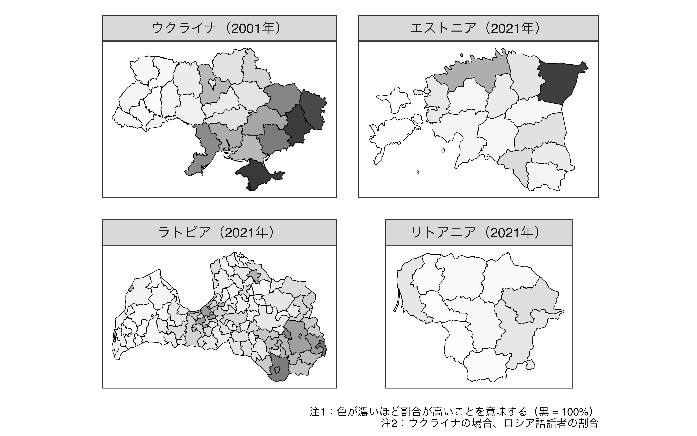

社会の「なぜ？」をデータで考える
結果：アニメ放送によって小型二輪車の保有台数が85,342台上昇（約4.6%\(\uparrow\)）
| 国名 | 戦争の因果効果 | 95%信頼区間 | 統計的に |
|---|---|---|---|
| エストニア | 7.75%p | [0.73, 14.98] | 有意 |
| ラトビア | -3.62%p | [-12.58, 5.34] | 非有意 |
| リトアニア | -4.25%p | [-11.73, 3.24] | 非有意 |
エストニアとウクライナの類似性（ロシア系人口が特定の地域に集中している）
サマーキャンパス@高槻（2025/08/23）